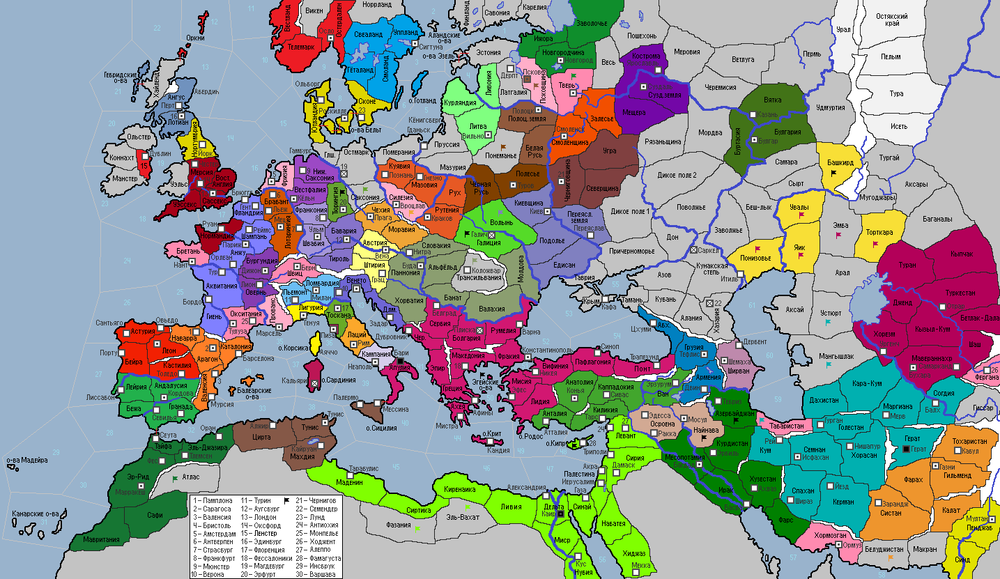

<== | 1 | | 2 | | 3 | | 4 | | 5 | | 6 | | 7 | | 8 | | 9 | ==>
Норманнское завоевание Южной Италии
Первые норманны прибыли в Юж.Италию в начале XI века под видом паломников. В последствии они стали наниматься наёмниками и заниматься привычным для себя делом - грабежом местного населения, пока в 1030 г. в графстве Беневенто не умер последний граф из династии Ландольфидов. Воспользовавшись этим, братья Отвили захватывают трон графства, переименуя его в Апулию. [страна Апулия получает нового правителя Роберта Отвиля (5\3), -1 к стаб., армию: 1 ТК, 1 ТВ, 1 СВ]
· Теодор I – новый правитель Вестфалии. Архиепископство заключает военный союз с Саксонией. · Армия Смоленского княжества вторгается в земли Весь и проигрывает сражение ополчению местных племен · Богемцы вновь вторгаются в Силезию и захватывают провинцию. · Рабы поднимаются в Каппадокии! · Венгры вторгаются в Трансильванию. · Танкмар I Сквернослов завещает трон Саксонии сыну Луидольфу. Лужичане нападают на Тюрингию. · Правитель Флоренции Сиджифредо I избирается новым императором СРИ, став первым итальянцем, кому был доверен сей высокий пост. · Государство Зиридов аннексирует Алжир. · Правительница Мосула Ильнара I и хан Караханидского государства Тобга-хан заключают династический брак. Восстание рабов в Найнаве! · Эрнст I Мрачный, унаследовав трон Швабии, столкнулся с проблемой: заговорщики поднимают мятеж и захватывают столицу. Герцог расправляется с заговорщиками и подавляет мятеж. · Король Арагона Санчо I Безбожник решает искупить наложенную на страну анафему праведной войной с мусульманами. В 1030 году он объявляет войну Альморавидам, призывая на помощь Кастилию · Бей Хормозгана Хосам призывает шиитов к священной войне против суннитов, призывая фанатиков по всему миру, поднять чёрное знамя пророка Али! · Поляки сжигают г.Галич! Королевские войска подавляют мятеж в столице · Газневиды захватывают Белуджистан. · Род Герардеска на троне Пизанской республики продолжил Андреа. · На Эгейских о-вах восстают галерные рабы! Эпидемия в г.Константинополь! Император Фотий возводит роскошный Никейский дворец. · Караханиды разбивают варваров в провинции Эмба и захватывают их земли. · Шииты поднимают восстание в провинции Азербайджан! Малик Буидов Ильяс I объявляет войну Хормозгану. Однако, войска шиитов смогли нанести поражение суннитской армии Буидов. · Фрейр I – новый король Норвегии. · Ширван становится вассалом державы Фатимидов. · Новгородская республика начинает войну с Тверским княжеством. Войска сторон сошлись недалеко от г.Тверь, где новгородцы смогли разбить дружину тверского князя. · Илья Добрый наследует трон Полоцкого княжества и заключает династический брак с черниговской княгиней Ольгой. Войска Полоцкого княжества берут штурмом г.Псков. · Сельждуки начинают войну против Табаристана и без особых сложностей захватывают страну · Жоффруа I – новый граф Прованса.